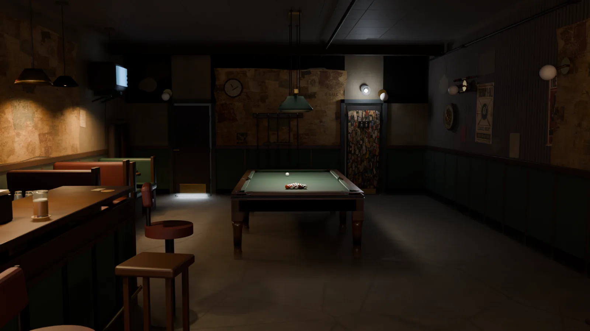
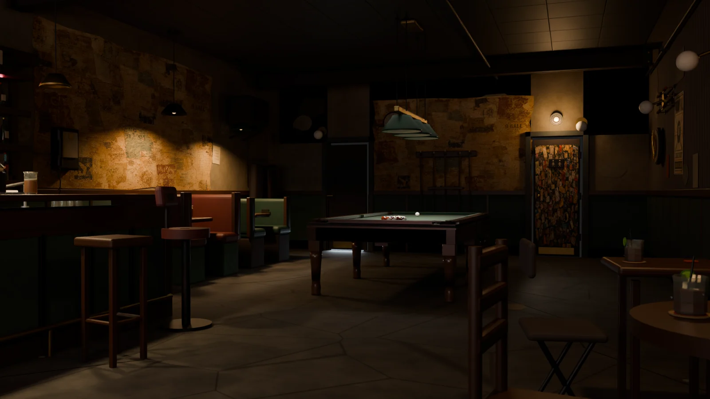
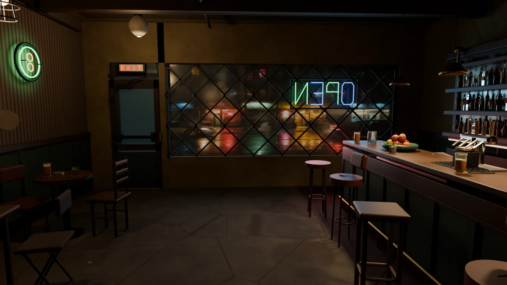
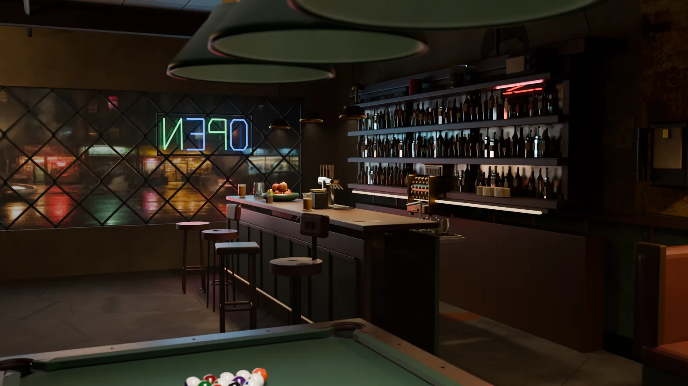
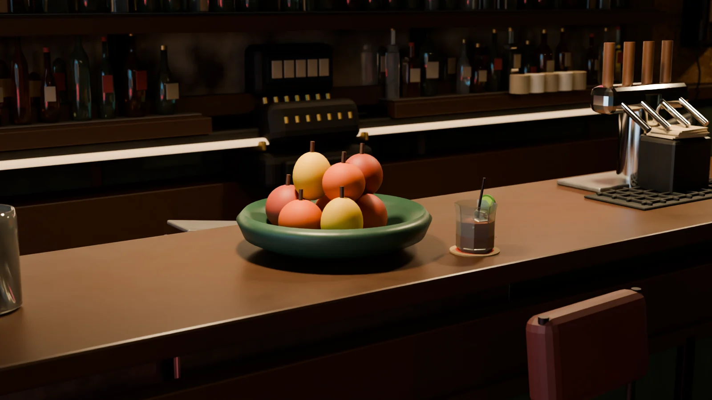
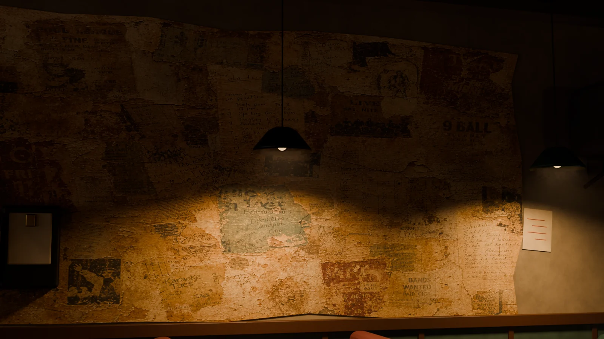
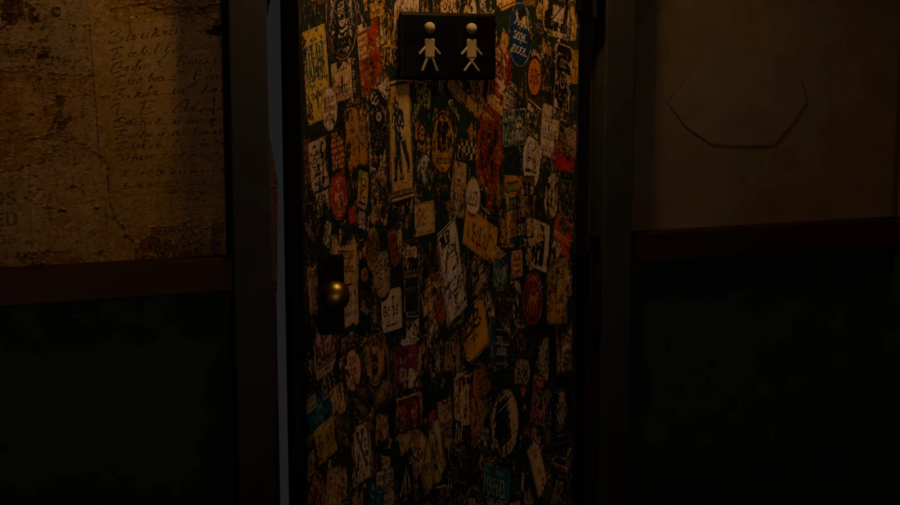

What this is
Every surface in this room was built for it. The bar, the booths, the wheat-pasted wall, the register, the 213 bottles behind it — modelled, textured and lit from nothing in Blender. Nothing here is stock.
And the break in that film is not animation. No one keyframed those balls. A rigid-body solver ran the shot at 240 Hz — cue tip through cushion rebound through the two that dropped — and Blender was handed the result to play back, frame for frame, to within a fifteenth of a degree. The sounds are placed on the solver's own collision timestamps. Nothing in the mix was timed by hand.
2,229
Objects in the frozen environment
90
Authored materials
15/15
Physics contracts passing
216/216
Playback parity checks
0.069°
Worst orientation error, any frame
90
Breaks simulated to choose one
The room
It had to look like
somebody drinks here.
A room reads as real through detail, not through duration. So the rules were strict: every light has a fixture you can point at, nothing floats, and the place is worn rather than dirty. 1,127 individual items were checked for whether something physically holds them up — 333 of them flagged high-risk and audited by hand.











The break
Not animated.
Solved.
The shot is a parameter tuple — where the cue ball sits on the head string, how hard it is hit, where the tip lands — handed to a deterministic event-based solver. It returns every collision with a timestamp: 248 events in 7.806 seconds, from the cue strike to the last ball rolling to a stop.
Blender never simulates anything. It is a playback device. The solved trajectory is baked onto the balls as position and rotation, then 216 parity checks confirm every sampled frame in the scene matches the solver to within 0.069° of orientation. The scene contains zero rigid bodies, and the validators fail if one ever appears.
To pick this break, 90 candidates were swept across cue position, speed, tip offset and aim. 26 were thrown out — 18 scratched, 6 failed to spread the rack, 2 were illegal, 5 left a ball parked in a pocket jaw. The winner was chosen from the 64 that were legal.

11.6m/s
Cue ball at impact
248
Solver events in one break
31
Rail contacts before it settles
2
Balls down — the 4 and the 7
7.81s
Until nothing is moving
240Hz
Trajectory sample rate
The sound
Every hit is
where the physics
put it.
The mix is generated from the same event list that drives the picture. A ball-ball collision becomes a clack whose level comes from the actual impact speed; a cushion contact is quieter and duller; the two that drop get leather and basket. The cue strike is the loudest single sound in the film, and everything before it is deliberately near-silent.
In the first fiftieth of a second after impact, 99 collisions happen at once. All 99 would sum into mush, so the six loudest are kept — that stack is the sound of a break. Every remaining hit is placed to the sample. The whole mix is seeded from the trajectory’s own hash, so the same break always produces a bit-identical file.
How it was made
Everything is
rebuilt from source.
No file is hand-edited. The room is generated by a chain of scripts, and a set of locks fingerprints the result — if an object moves that should not have, the build fails rather than quietly shipping.
Build the shell, then dress it
Architecture, bar, set dressing, patina and lighting run in order, each owning its own collection. 2,229 objects and 90 materials come out the far end.
Prove the table before playing on it
The table is validated against a geometry contract — 68 checks on pocket mouths, cushion noses, rail heights — before a single ball is allowed to move.
Solve the shot outside Blender
A dedicated physics solver runs the break and exports a 240 Hz trajectory with exact collision states. 15 contract tests confirm the constants behave.
Bake it back and check every frame
The trajectory is written onto the balls as keyframes, then compared against the source: 216 checks, position and orientation, every sampled frame.
Light it once, render it twice
Stills and film share the same room, the same haze and the same lights. The film is cut on the solver’s own collision timestamps rather than by feel.
The room is deliberately fictional. Every poster, sticker, flyer and label was generated for this build — no real logos, no real businesses, nothing borrowed.